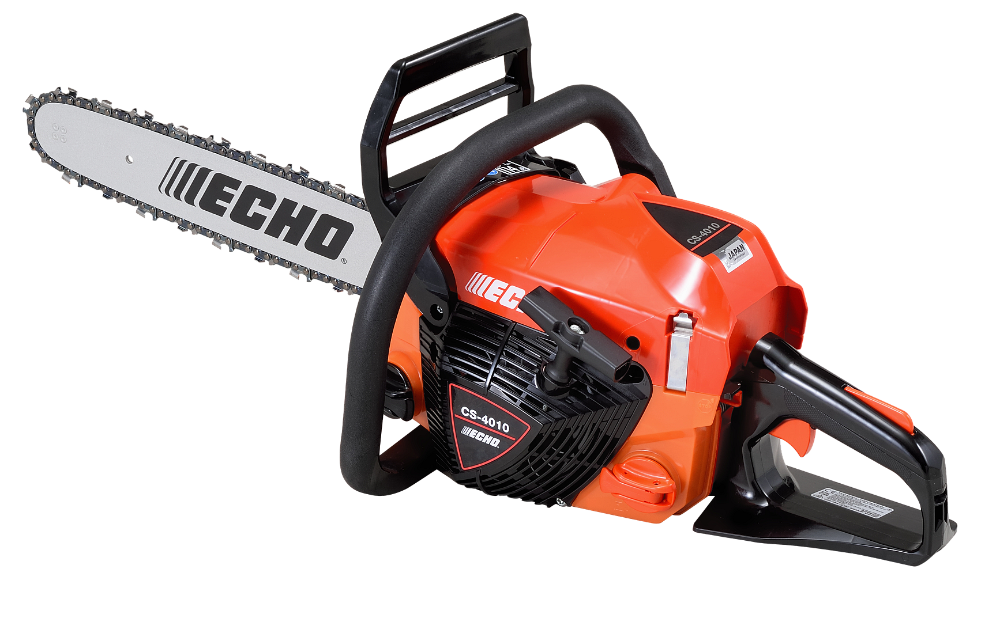
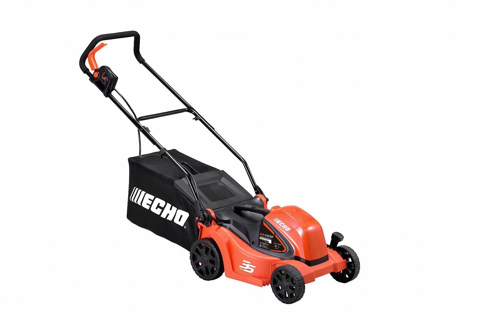
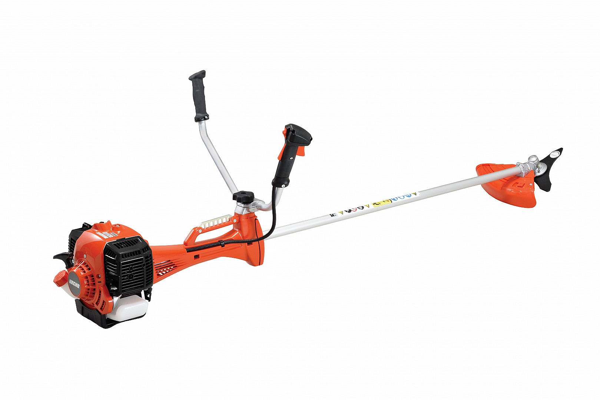

Motoserra Floresta 45
Alta performance para corte de lenha e poda.
Fazer EncomendaMotos · Bicicletas · Jardinagem
Selecionamos modelos com boa relação qualidade/preço e assistência técnica garantida.

Alta performance para corte de lenha e poda.
Fazer Encomenda
Ideal para jardins de médio e grande porte.
Fazer Encomenda
Limpeza eficaz de terrenos e ervas altas.
Fazer EncomendaNa Oficina Joaquim Luís Simões, não vendemos apenas equipamentos; garantimos o rendimento a longo prazo do seu investimento florestal ou de jardinagem. Todos os nossos modelos são criteriosamente montados, testados em ambiente real e afinados antes de chegarem às mãos do cliente. Oferecemos um acompanhamento especializado para compreender a topologia do seu terreno e indicar a cilindrada ou potência exata necessária, assegurando também um stock permanente de peças de substituição e consumíveis originais na nossa oficina.